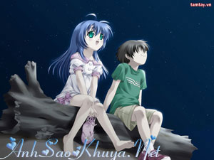

|
Cậu biết không? Nếu một ngày nào đó tớ thix cậu, tớ sẽ không bao giờ nói cho cậu biết đâu. Vì tớ bit’ sẽ chẳng bao giờ tớ có thể đến với cậu được và vì cậu đã có một người. Nếu một ngày tớ có một điều ước tớ ước rằng sẽ mang điều ước này đến cho cậu. Vì tớ bit’ cậu rất muốn ước về cuộc tình của mình luôn luôn tốt đẹp không bao giờ có sự cách xa Nếu cậu là một ngôi sao trên bầu trời đêm lấp lánh ánh sáng, tớ sẽ ước rằng mình là một ngôi sao được gần cậu nhất. Vì cậu không biết đó thôi các vì sao luôn luôn cách xa nhau tớ ước vậy chỉ là tự an ủi mình mà thôi Nếu một ngày nào đó cậu vì người khác phải khóc, tớ sẽ đến bên cậu, ngồi xuống, ôm chầm và khoc’ chung với cậu. Nhưng tớ bit’ hông bao giờ có điều gì là bí mật cả, rồi một ngày nào đó cậu sẽ nhận ra, rằng tớ thix cậu và tớ thix nhìu lắm song tớ lại bit’ điều đó sẽ mang lại sự khó xử với cậu, cậu sẽ buồn, cậu sẽ khoc’ và tớ lại sẽ mãi là thằng ngốc lun mang đến nỗi bùn cho cậu. Tớ ko phải 1 người con trai hoàn hảo, hay ko muốn nói là rất nhiều tính xấu. Cậu ko thích tớ, chẳng có gì bất ngờ. Có 1 người bạn thân như cậu, với tớ thế là quá đủ. Vẫn biết đây chỉ là tình cảm của tuổi mới lớn, chưa thật sự chính chắn nhưng ko vì vậy mà tớ từ bỏ ở đây. Tớ vẫn tin, với tình cảm ấy sẽ giúp tớ trưởng thành hơn, mạnh mẽ hơn và chúng mình là bạn cậu nhé. Đó là tất cả những suy nghĩ mà tớ muốn nói với cậu. Tớ viết lên những dòng này chẳng phải để tỏ tình, tớ chỉ muốn cho cậu biết những suy nghĩ của tớ mà thôi. Tớ thix cậu. Uh.Nhưng có lẽ, cứ để như thế này thì tốt hơn. Tớ và cậu vẫn là 2 người bạn thân. Điều gì đến sẽ đến….Đừng ngại nhìn mặt, hay nói chiện với tớ cậu nhé. Khoảng thời gian tớ viết ra những đìu này, có lẽ là khoảng thời gian tớ sống thật với lòng mình nhất. Vì vậy, đừng im lặng với tớ nữa nhé. Đơn giản vì chúng mình là bạn mà thôi Cậu nè! Nói sao giờ nhỉ? À, cậu là người bạn tốt nhất của tớ, tớ thích cậu. Và nếu – Một ngày nào đó cậu không còn thấy tớ ở bên cạnh, cậu à đừng nghĩ là tớ bỏ cậu nhé, tớ chỉ là chạy thật xa thật xa, tớ không muốn để cậu thấy một cái gì đó, một điều gì đó thầm kín trong lòng tớ. Điều đó sẽ làm cậu bùn…. -Quả đất này tròn phải không cậu, tớ biết, cậu biết, mọi người đều biết và khi tớ bỏ chạy thật xa đừng đuổi theo cậu nhé! Vì một ngày nào đó, một lúc nào đó, và đến một khoảnh khắc nào đó, tớ vẫn sẽ gặp lại cậu mà thôi, chỉ là tớ sẽ ỡ sau lưng cậu. Nếu có cảm tình với tớ cậu hãy quay lưng lại và ôm chầm lấy tớ cậu nhé! Lúc đó tớ đã mệt, vòng tay cậu chính là niềm vui của tớ……..Còn nếu cậu muốn chúng mình là bạn tốt của nhau, hãy đừng làm gì cậu nhé, và tớ sẽ chạy thật xa thật xa….cho đến một ngày tớ kiệt sức và gục ngả. -Tớ thích cậu lắm, tớ thích những khi trò chuyện cùng cậu, và tớ thích khoảng thời gian đứng lặng nghe cậu nói huyện thuyên về một điều gì đó, về niềm vui, nỗi bùn, về người mà cậu thích… tớ luôn lắng nghe cậu. Khi cậu vui tớ vui, khi cậu bùn tớ cùng khóc với cậu song đôi vai tớ luôn luôn chờ đợi cậu, hãy trút hết những nỗi bùn lên vai của tớ, và khi cậu nói về người cậu thích, tớ thích cậu và lòng tớ nhói đau vì điều ấy…Nhưng tớ vẫn lun lắng nghe cậu, vì chúng mình là bạn tốt nhất của nhau hay vì tớ thích cậu? -Tớ nói với cậu tớ từng ước mình gặp được một người con gái đẹp nhất trên đời, cười và nói:”đừng mơ nữa” cậu chứ ai nhưng cậu có biết rằng tớ đã gặp người con gái ấy, trùng hợp thay người con gái ấy lại đang ngồi nghe điều ước của tớ lại còn giễu tớ nữa.”Đừng mơ!”….. Ờ thì là như thế mà…. Nguồn: ASK sưu tầm || Tham gia bình luận TẠI ĐÂY || Bạn vô tình đọc ở đâu đó một câu chuyện tình cảm động hoặc một câu chuyện do chính bạn viết ra. Hãy đến với chúng tôi để cùng nhau chia sẻ: wWw.anhsaokhuya.net
Chung tay vì một thế giới online lành mạnh !
|